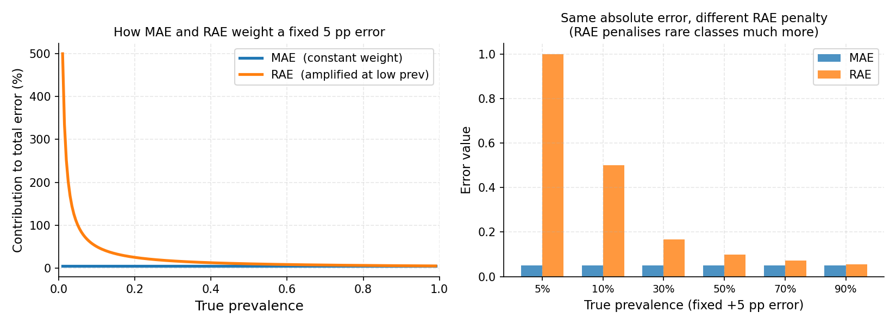

5.3. Evaluation Metrics#
Quantification metrics measure the discrepancy between the estimated prevalence vector \(\hat{p}\) and the true prevalence vector \(p\). Unlike classification metrics, they operate on aggregate probability vectors — not on individual predictions.
All metrics in mlquantify follow the same calling convention:
error = MetricName(true_prevalences, predicted_prevalences)
Both arguments can be:
A flat array of true class labels (
y_true), orA prevalence dict/array returned by
quantifier.predict(X).
mlquantify automatically converts true labels to prevalences using
get_prev_from_labels when needed.
5.3.1. Absolute Error Metrics#
5.3.1.1. AE and MAE — (Mean) Absolute Error#
AE computes the mean absolute difference per class over a single
sample. MAE averages AE over multiple samples (from a protocol).
When to use: MAE is the standard metric for quantification evaluation. It is interpretable (the average error in prevalence units, e.g. 0.05 means “off by 5 percentage points on average”), symmetric, and gives equal weight to all classes and prevalence levels.
{kind=link}

Left: for a fixed 5 percentage-point absolute error, MAE assigns equal weight regardless of the true prevalence (flat blue line), while RAE’s contribution grows steeply as prevalence approaches zero (orange curve). Right: the same 5 pp absolute error applied at different prevalence levels — RAE imposes a much heavier penalty at 5% and 10% prevalence, reflecting that a 5 pp error is far more significant when the true value is 5% than 50%.#
from mlquantify.metrics import MAE, AE
from mlquantify.utils import get_prev_from_labels
import numpy as np
y_true = np.array([0, 0, 1, 0, 1, 1, 0, 0, 0, 1])
y_pred = {0: 0.62, 1: 0.38}
true_prev = get_prev_from_labels(y_true)
print(AE(true_prev, y_pred)) # single-sample AE
# 0.02
# Over multiple protocol samples
errors = [AE(get_prev_from_labels(y_s), q.predict(X_s))
for X_s, y_s in samples]
print(MAE(errors)) # mean over all samples
5.3.1.2. SE and MSE — (Mean) Squared Error#
SE penalises large errors more severely than AE (quadratic vs
linear). Use MSE when large deviations are especially harmful.
from mlquantify.metrics import MSE
print(MSE(true_prev, y_pred))
5.3.2. Relative Error Metrics#
5.3.2.1. RAE and NRAE — (Normalised) Relative Absolute Error#
where \(\varepsilon\) is a small smoothing constant.
When to use: RAE amplifies errors at low prevalences. An error of 5 percentage points matters much more at 5% prevalence than at 50%. Use RAE when rare classes are important (e.g. rare disease detection, fraud detection).
NRAE normalises RAE to \([0, 1]\) so it is comparable across
datasets with different numbers of classes.
from mlquantify.metrics import RAE, NRAE
print(RAE(true_prev, y_pred))
print(NRAE(true_prev, y_pred))
5.3.2.2. NAE — Normalised Absolute Error#
NAE normalises AE by the number of classes so results are comparable
across different multiclass settings.
5.3.3. Divergence Metrics#
5.3.3.1. KLD and NKLD — (Normalised) Kullback-Leibler Divergence#
KLD measures the information loss when using \(\hat{p}\) to approximate \(p\). It penalises zero-probability predictions asymptotically (use the smoothed version internally).
When to use: KLD is used when prevalences represent probability
distributions and you care about calibration. It is asymmetric — the true
and estimated distributions are not interchangeable — so the convention
matters (KLD(true, pred)). NKLD normalises to \([0, 1]\).
from mlquantify.metrics import KLD, NKLD
print(KLD(true_prev, y_pred))
print(NKLD(true_prev, y_pred))
5.3.4. Ordinal Metrics#
5.3.4.1. NMD — Normalised Match Distance#
NMD is designed for ordinal quantification tasks where classes
have a natural order (e.g. severity levels: mild < moderate < severe). It
measures the earth-mover distance between the CDFs of \(p\) and
\(\hat{p}\).
When to use: Use NMD when your classes are ordered and the distance between adjacent classes matters. For non-ordinal problems, AE or KLD are more appropriate.
from mlquantify.metrics import NMD
# Ordinal classes: 0 < 1 < 2
true_prev = [0.5, 0.3, 0.2]
pred_prev = [0.4, 0.4, 0.2]
print(NMD(true_prev, pred_prev))
5.3.4.2. RNOD — Relative Normalised Order Distance#
RNOD is a relative version of NMD that amplifies errors at low
prevalences — analogous to RAE for ordinal settings.
5.3.5. Distribution Distance Metrics#
The following functions also serve as loss functions in distribution-matching quantifiers:
Function |
Description |
|---|---|
|
Hellinger distance between two distributions. \(\in [0, 1]\). |
|
TopSoe (Jensen-Shannon-like) divergence. |
|
Probabilistic symmetric chi-squared divergence. |
|
Squared Euclidean distance. |
These are available both in standard numpy and JAX-compatible variants
(hellinger_jax, etc.) for gradient-based optimisation.
5.3.6. Choosing a Metric#
Metric |
Use when |
|---|---|
MAE |
Default. Most papers report MAE. Easy to interpret. |
RAE |
Rare classes matter; you want errors at low prevalences amplified. |
KLD / NKLD |
Probabilistic calibration of the prevalence vector matters. |
MSE |
Large estimation errors are especially harmful. |
NMD |
Classes have a natural order (ordinal quantification). |
NRAE / NAE / NKLD |
Comparing results across datasets with different class counts. |
Full evaluation example:
from mlquantify.model_selection import APP
from mlquantify.metrics import MAE, RAE, NKLD
from mlquantify.utils import get_prev_from_labels
from mlquantify.likelihood import EMQ
from sklearn.linear_model import LogisticRegression
from sklearn.datasets import make_classification
from sklearn.model_selection import train_test_split
import numpy as np
X, y = make_classification(n_samples=2000, weights=[0.8, 0.2],
random_state=42)
X_train, X_test, y_train, y_test = train_test_split(
X, y, test_size=0.5, random_state=42)
q = EMQ(LogisticRegression())
q.fit(X_train, y_train)
protocol = APP(batch_size=100, n_prevalences=21, repeats=10,
random_state=42)
maes, raes, nklds = [], [], []
for idx in protocol.split(X_test, y_test):
X_s, y_s = X_test[idx], y_test[idx]
tp = get_prev_from_labels(y_s)
pp = q.predict(X_s)
maes.append(MAE(tp, pp))
raes.append(RAE(tp, pp))
nklds.append(NKLD(tp, pp))
print(f"MAE: {np.mean(maes):.4f}")
print(f"RAE: {np.mean(raes):.4f}")
print(f"NKLD: {np.mean(nklds):.4f}")
Evaluation metrics for quantification assess the accuracy of estimated class prevalences against true prevalences. These metrics are crucial for understanding how well a quantifier performs, especially under distributional shifts.
The library includes several widely used evaluation metrics:
Metric |
Description |
|---|---|
Normalized Match Distance |
|
Relative Normalized Overall Deviation |
|
Variance Shift Error |
|
Cramér-von Mises L1 Distance |
|
Absolute Error |
|
Squared Error |
|
Mean Absolute Error |
|
Mean Squared Error |
|
Kullback-Leibler Divergence |
|
Relative Absolute Error |
|
Normalized Absolute Error |
|
Normalized Relative Absolute Error |
|
Normalized Kullback-Leibler Divergence |
5.4. Single Label Quantification (SLQ) Metrics#
5.4.1. AE (Absolute Error)#
Parameters:
\(p\): array-like, shape (n_classes,) True prevalence (distribution of classes).
\(\hat{p}\): array-like, shape (n_classes,) Estimated prevalence.
AE calculates the simple absolute error across classes:
Its primary strength is transparency and ease of interpretation.
5.4.2. SE (Squared Error)#
Parameters:
\(p\): array-like, shape (n_classes,) True prevalence.
\(\hat{p}\): array-like, shape (n_classes,) Estimated prevalence.
SE is the sum of squared differences:
This penalizes larger errors more heavily, making outlier mistakes more obvious.
5.4.3. MAE (Mean Absolute Error)#
Parameters:
\(p\): array-like, shape (n_classes,) True prevalence.
\(\hat{p}\): array-like, shape (n_classes,) Estimated prevalence.
MAE averages the absolute errors over all classes:
It offers a normalized perspective, useful for comparing performances across datasets.
5.4.4. MSE (Mean Squared Error)#
Parameters:
\(p\): array-like, shape (n_classes,) True prevalence.
\(\hat{p}\): array-like, shape (n_classes,) Estimated prevalence.
MSE averages the squared errors:
Ideal for highlighting large deviations in prevalence estimation.
5.4.5. KLD (Kullback-Leibler Divergence)#
Parameters:
\(p\): array-like, shape (n_classes,) True prevalence.
\(\hat{p}\): array-like, shape (n_classes,) Estimated prevalence.
KLD measures the information loss between distributions:
Its key advantage is sensitivity to wrong predictions where the true prevalence is high.
5.4.6. RAE (Relative Absolute Error)#
Parameters:
\(p\): array-like, shape (n_classes,) True prevalence.
\(\hat{p}\): array-like, shape (n_classes,) Estimated prevalence.
\(\epsilon\): float, optional (default=1e-12) Small constant to ensure numerical stability.
RAE scales the absolute error by true prevalence:
This is beneficial for identifying relative impact in imbalanced scenarios.
5.4.7. NAE (Normalized Absolute Error)#
Parameters:
\(p\): array-like, shape (n_classes,) True prevalence.
\(\hat{p}\): array-like, shape (n_classes,) Estimated prevalence.
NAE normalizes the absolute error:
Best used for ensuring error scale invariance.
5.4.8. NRAE (Normalized Relative Absolute Error)#
Parameters:
\(p\): array-like, shape (n_classes,) True prevalence.
\(\hat{p}\): array-like, shape (n_classes,) Estimated prevalence.
\(\epsilon\): float, optional (default=1e-12) Small constant for numerical stability.
NRAE further normalizes relative errors:
This balances error measurement between true and estimated values.
5.4.9. NKLD (Normalized Kullback-Leibler Divergence)#
Parameters:
\(p\): array-like, shape (n_classes,) True prevalence.
\(\hat{p}\): array-like, shape (n_classes,) Estimated prevalence.
\(\epsilon\): float, optional (default=1e-12) Small constant for numerical stability.
NKLD outputs a normalized form of KLD:
This makes it robust for comparing across distinct sample sizes.
5.5. Regression-Based Quantification (RQ) Metrics#
5.5.1. VSE (Variance Shift Error)#
Parameters:
\(p\): array-like, shape (n_classes,) True prevalence.
\(\hat{p}\): array-like, shape (n_classes,) Estimated prevalence.
The Variance Shift Error quantifies the discrepancy between the variance of true and estimated distributions:
This metric emphasizes changes in dispersion, which is useful for detecting model bias towards certain classes.
5.5.2. CvM_L1 (Cramér-von Mises L1 Distance)#
Parameters:
\(p\): array-like, shape (n_classes,) True prevalence.
\(\hat{p}\): array-like, shape (n_classes,) Estimated prevalence.
CvM_L1 compares cumulative distributions using the L1 norm:
where (F_p(c)) is the cumulative distribution. Its advantage lies in capturing distributional differences beyond pointwise errors.
5.6. Ordinal Quantification (OQ) Metrics#
5.6.1. NMD (Normalized Match Distance)#
Parameters:
\(p\): array-like, shape (n_classes,) True prevalence.
\(\hat{p}\): array-like, shape (n_classes,) Estimated prevalence.
The NMD metric quantifies the normalized difference between two prevalence distributions:
where ( p(c) ) is the true prevalence and ( hat{p}(c) ) is the estimated. The advantage of NMD is its straightforward interpretability and normalization, making it ideal for comparing different quantification methods.
5.6.2. RNOD (Relative Normalized Overall Deviation)#
Parameters:
\(p\): array-like, shape (n_classes,) True prevalence.
\(\hat{p}\): array-like, shape (n_classes,) Estimated prevalence.
\(\epsilon\): float, optional (default=1e-12) Small constant to ensure numerical stability.
RNOD measures the proportional deviation between the true and estimated prevalence, particularly highlighting errors in rare classes:
Its benefit is in handling imbalanced distributions by reducing the influence of dominant classes.